groundctl
Product memory for AI agent builders.
npm install -g @groundctl/cli

When Claude Code builds your product across sessions,
nobody remembers what was built, what's left, or what's claimed.
groundctl fixes that — for you and for your agents.
Solo builder
Pick up exactly where you left off. groundctl status tells you — and your agent — what's been built, what's next, what's in progress.
Headless agent
Run agents overnight. Each one reads PROJECT_STATE.md on startup and knows exactly where the product stands — no instructions needed.
N agents in parallel
The claiming system prevents collisions. Each agent reserves what it's working on. No duplicate work, no conflicts, no drift.
How it works
groundctl creates a local SQLite database and installs hooks in your Claude Code project.
After every session, the hook parses the transcript — files touched, commits, decisions — and writes to SQLite.
PROJECT_STATE.md and AGENTS.md are regenerated from SQLite. The next agent reads them and knows where to start.
groundctl claim reserves a feature. groundctl complete marks it done. No duplicate work across parallel sessions.
Get started
$ npm install -g @groundctl/cli $ cd your-project $ groundctl init ✓ Database ready ✓ Claude Code hooks installed ✓ PROJECT_STATE.md generated ✓ groundctl initialized for your-project # Or bootstrap from existing git history: $ groundctl init --import-from-git
groundctl status
macro view of what's built
groundctl claim <feature>
reserve a feature for this session
groundctl next
what should the agent build next
groundctl health
quality score + accumulated debt
groundctl report
generate SESSION_REPORT.md
groundctl ingest
parse transcript → SQLite